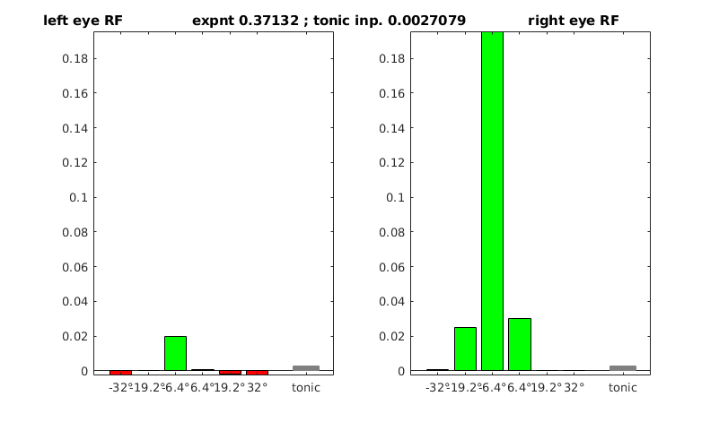
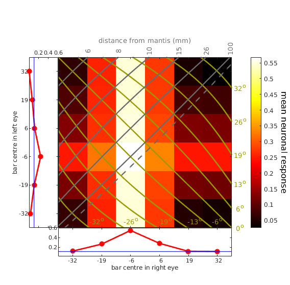
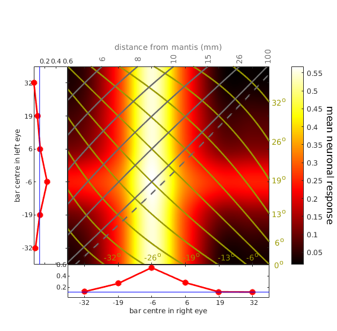

The model is described in detail in the paper:
Rosner et al, "A Neuronal Correlate of Insect Stereopsis" Nature Communication 2019 Jun 28;10(1):2845.
doi: 10.1038/s41467-019-10721-z
It is a very coarse and abstract model which attempts to model the average response of real neurons. It is closely based on the binocular energy model developed in vertebrates.
We fitted these binocular energy model neurons to data recorded from neurons in the praying mantis optic lobe. All the neuronal data and the fitting programs are available here:
https://data.ncl.ac.uk/articles/DataPackage_Rosner_et_al_2019_zip/8063327
Here, I have just saved the fitted parameters. These are made available in the CellParameters.csv file, for readability, and also in individual .mat files such as "model_of_cell_rr171019_darkbar_on.mat".
Note that we fitted different parameters to the cell in different conditions, e.g. its response at the onset vs offset of briefly-presented dark bars vs bright bars. Not all cells were tested in all conditions.
Run the Matlab code
RUNME.m
This will read in a .mat file, plot the receptive fields (NB very coarsely sampled!) and the response of the neuron to monocular and binocular bar stimuli with a range of disparities, as described in the paper, and plot the following:


